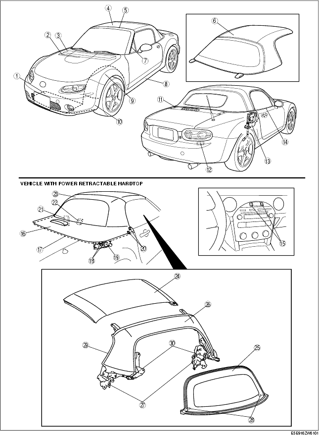

Workshop Manual ➭ BODY & ACCESSORIES ➭ EXTERIOR TRIM ➭ EXTERIOR TRIM LOCATION INDEX
EXTERIOR TRIM LOCATION INDEX
id091600445400
{: #wp1059776}

|
Front under cover {: #wp1059807} (See FRONT UNDER COVER REMOVAL/INSTALLATION.) {: #wp1059871} |
|
|---|---|
|
2 {: #wp1059845} |
Side cowl grille {: #wp1059848} (See SIDE COWL GRILLE REMOVAL/INSTALLATION.) {: #wp1059895} |
|
3 {: #wp1059852} |
Cowl grille {: #wp1059855} (See COWL GRILLE REMOVAL/INSTALLATION.) {: #wp1059919} |
|
4 {: #wp1059931} |
Convertible top {: #wp1059934} (See CONVERTIBLE TOP REMOVAL/INSTALLATION.) {: #wp1059956} (See CONVERTIBLE TOP DISASSEMBLY/ASSEMBLY.) {: #wp1059970} (See CONVERTIBLE TOP ADJUSTMENT.) {: #wp1059984} |
|
5 {: #wp1059996} |
Windshield garnish {: #wp1059999} (See WINDSHIELD GARNISH REMOVAL.) {: #wp1060027} (See WINDSHIELD GARNISH INSTALLATION.) {: #wp1060041} |
|
6 {: #wp1060053} |
Detachable hardtop {: #wp1060056} (See DETACHABLE HARDTOP DISASSEMBLY/ASSEMBLY.) {: #wp1060088} (See DETACHABLE HARDTOP ADJUSTMENT.) {: #wp1060102} |
|
7 {: #wp1060114} |
Drip molding {: #wp1060117} (See DRIP MOLDING REMOVAL/INSTALLATION.) {: #wp1060153} |
|
8 {: #wp1060165} |
Side step molding {: #wp1060168} (See SIDE STEP MOLDING REMOVAL.) {: #wp1060206} (See SIDE STEP MOLDING INSTALLATION.) {: #wp1060220} |
|
9 {: #wp1060232} |
splash board A {: #wp1060235} (See SPLASH SHIELD REMOVAL/INSTALLATION.) {: #wp1060277} |
|
10 {: #wp1060289} |
splash board B {: #wp1060292} (See SPLASH SHIELD REMOVAL/INSTALLATION.) {: #wp1060336} |
|
11 {: #wp1060348} |
Beltline molding {: #wp1060351} (See BELTLINE MOLDING REMOVAL/INSTALLATION.) {: #wp1060397} |
|
12 {: #wp1060409} |
Extractor chamber {: #wp1060412} (See EXTRACTOR CHAMBER REMOVAL/INSTALLATION.) {: #wp1060460} |
|
13 {: #wp1060472} |
Drain cover {: #wp1060475} (See DRAIN COVER REMOVAL/INSTALLATION.) {: #wp1060525} |
|
14 {: #wp1060537} |
Front beltline molding {: #wp1060540} (See FRONT BELTLINE MOLDING REMOVAL/INSTALLATION.) {: #wp1060592} |
|
15 {: #wp1060604} |
Retractable hardtop switch {: #wp1060607} (See POWER RETRACTABLE HARDTOP SWITCH REMOVAL/INSTALLATION.) {: #wp1060661} (See POWER RETRACTABLE HARDTOP SWITCH INSPECTION.) {: #wp1060675} |
|
16 {: #wp1060687} |
Deck panel {: #wp1060690} (See DECK PANEL REMOVAL/INSTALLATION.) {: #wp1060748} (See DECK PANEL DISASSEMBLY/ASSEMBLY.) {: #wp1060762} (See DECK PANEL ADJUSTMENT.) {: #wp1060776} |
|
17 {: #wp1060788} |
Rear deck weatherstrip {: #wp1060791} (See REAR DECK WEATHERSTRIP REMOVAL.) {: #wp1060855} (See REAR DECK WEATHERSTRIP INSTALLATION.) {: #wp1060869} |
|
18 {: #wp1060881} |
Deck panel limit switch {: #wp1060884} (See DECK PANEL LIMIT SWITCH REMOVAL/INSTALLATION.) {: #wp1060952} (See DECK PANEL LIMIT SWITCH INSPECTION.) {: #wp1060966} |
|
19 {: #wp1060978} |
Deck panel motor {: #wp1060981} (See DECK PANEL MOTOR REMOVAL/INSTALLATION.) {: #wp1061053} (See DECK PANEL MOTOR INSPECTION.) {: #wp1061067} |
|
20 {: #wp1061079} |
Power retractable hardtop limit switch {: #wp1061082} (See POWER RETRACTABLE HARDTOP LIMIT SWITCH REMOVAL/INSTALLATION.) {: #wp1061158} (See POWER RETRACTABLE HARDTOP LIMIT SWITCH INSPECTION.) {: #wp1061172} |
|
21 {: #wp1061184} |
Power retractable hardtop control module {: #wp1061187} (See POWER RETRACTABLE HARDTOP CONTROL MODULE REMOVAL/INSTALLATION.) {: #wp1061267} (See POWER RETRACTABLE HARDTOP CONTROL MODULE INSPECTION.) {: #wp1061281} (See POWER RETRACTABLE HARDTOP CONTROL MODULE BRACKET REMOVAL/INSTALLATION.) {: #wp1061295} |
|
22 {: #wp1061307} |
Roof hook {: #wp1061310} (See ROOF HOOK REMOVAL/INSTALLATION.) {: #wp1061396} (See ROOF HOOK CABLE REMOVAL/INSTALLATION.) {: #wp1061410} |
|
23 {: #wp1061422} |
Power retractable hardtop {: #wp1061425} (See POWER RETRACTABLE HARDTOP REMOVAL/INSTALLATION.) {: #wp1061515} (See POWER RETRACTABLE HARDTOP ADJUSTMENT.) {: #wp1061529} |
|
24 {: #wp1061541} |
Front roof panel {: #wp1061544} (See FRONT ROOF PANEL REMOVAL/INSTALLATION.) {: #wp1061638} (See FRONT ROOF PANEL DISASSEMBLY/ASSEMBLY.) {: #wp1061652} |
|
25 {: #wp1061664} |
Rear window glass {: #wp1061667} (See REAR WINDOW GLASS REMOVAL/INSTALLATION [POWER RETRACTABLE HARDTOP].) {: #wp1061765} |
|
26 {: #wp1061777} |
Middle roof panel {: #wp1061780} (See MIDDLE ROOF PANEL REMOVAL/INSTALLATION.) {: #wp1061880} (See MIDDLE ROOF PANEL DISASSEMBLY/ASSEMBLY.) {: #wp1061894} |
|
27 {: #wp1061906} |
Roof motor {: #wp1061909} (See BELTLINE MOLDING REMOVAL/INSTALLATION.) {: #wp1062013} (See ROOF MOTOR INSPECTION.) {: #wp1062027} |
|
28 {: #wp1062039} |
Power retractable hardtop drain hose {: #wp1062042} (See POWER RETRACTABLE HARDTOP DRAIN HOSE REMOVAL/INSTALLATION.) {: #wp1062150} |
|
29 {: #wp1062162} |
Middle roof panel weatherstrip {: #wp1062165} (See MIDDLE ROOF PANEL WEATHERSTRIP REMOVAL/INSTALLATION.) {: #wp1062275} |
|
30 {: #wp1062287} |
Roof link lock {: #wp1062290} (See ROOF LINK LOCK REMOVAL/INSTALLATION.) {: #wp1062402} |